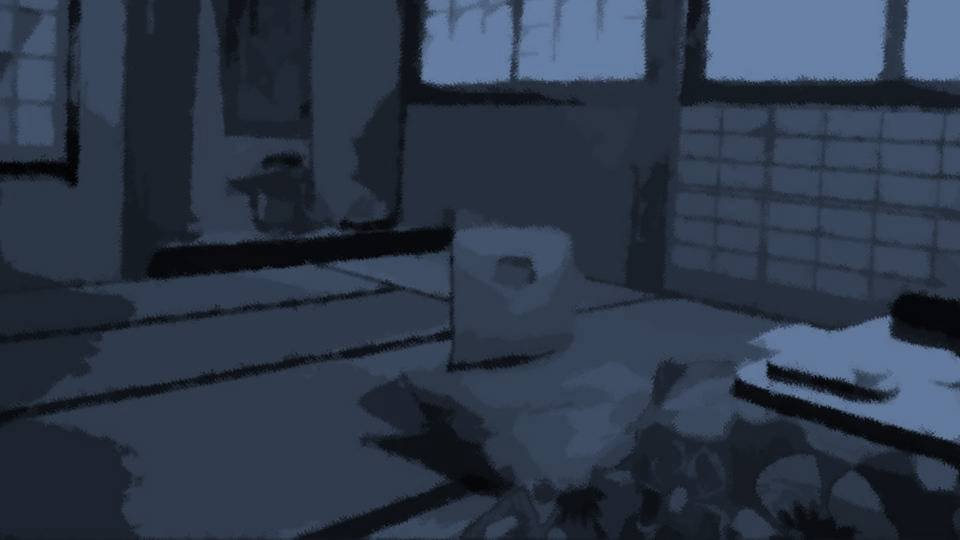

Script 00002102
 video: 光.wmv
video: 光.wmv
「茅萱、ごめんね。お母さん、死んじゃったんだ……」
「お母さん……！」
「でも、茅萱にだけ、会うことが許されたの。 誰も見ていない場所で、ちょっとだけね」
「ほんとに……？ ほんとに、お母さんに会えるの？ これからも会えるの！？」
「お母さん……！」
「でも、茅萱にだけ、会うことが許されたの。 誰も見ていない場所で、ちょっとだけね」
「ほんとに……？ ほんとに、お母さんに会えるの？ これからも会えるの！？」
video: 光.wmv「ええ、本当よ。
でもね……条件があるの。
毎年、1人ずつ茅萱が人を殺さないといけないの」
「そんな……！」
「お父さんが私を殺した犯人って疑われているの、知っているでしょ？ お父さんがこの集落から消えてしまったら、私はもう、茅萱の前に現れることはできないの」
「そんな……！」
「お父さんが私を殺した犯人って疑われているの、知っているでしょ？ お父さんがこの集落から消えてしまったら、私はもう、茅萱の前に現れることはできないの」
video: 光.wmv「いやだ、そんなの嫌だよ！」
「だから茅萱、もう家族を失わないために、お父さんを疑う人を消さないといけない。 茅萱は強いから、できるわよね？」
「………… うん……」
「このことは、2人だけの秘密よ？ 必ず、ナイフでやるの」
「だから茅萱、もう家族を失わないために、お父さんを疑う人を消さないといけない。 茅萱は強いから、できるわよね？」
「………… うん……」
「このことは、2人だけの秘密よ？ 必ず、ナイフでやるの」
video: 光.wmv「ナイフで……？」
「そう、ナイフで」
「そう、ナイフで」
「は……！？」

「ん……夢……？」
「ん……もし、お父さんがいなくなったら……。
そんなの……絶対にやだ……！」

「ん……ナイフで……。
ナイフで……！」
「おおい！ 誰か来てくれ！ 百合子が！」

「どうした城崎！？」
「百合子が……死んでる……！」
「百合子が……死んでる……！」
「…………
お母さん……」